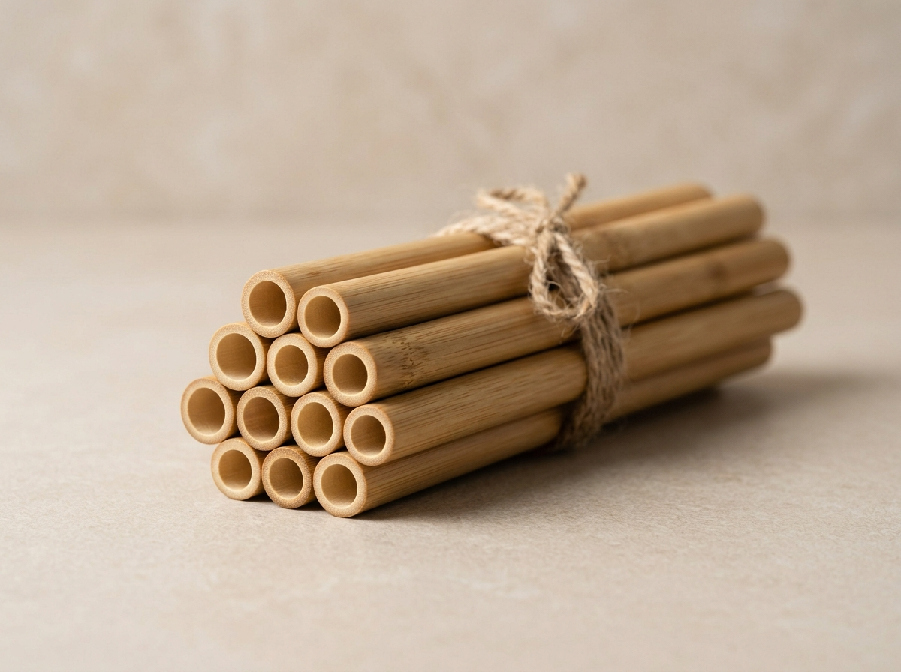

Флагман

Многоразовые трубочки
Бамбук Bali Prime
Цельный натуральный стебель без химических клеев. Выдерживает профессиональную посудомоечную мойку, кислые цитрусовые фреши и температуру до +95°C.
Диаметр: 6–10 мм
Гравировка лого
MOQ 1 000 шт